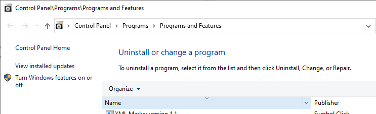
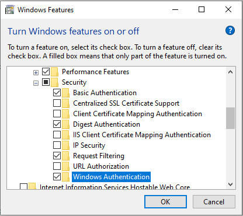
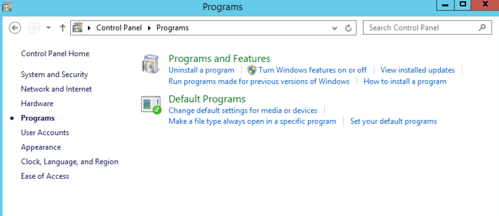
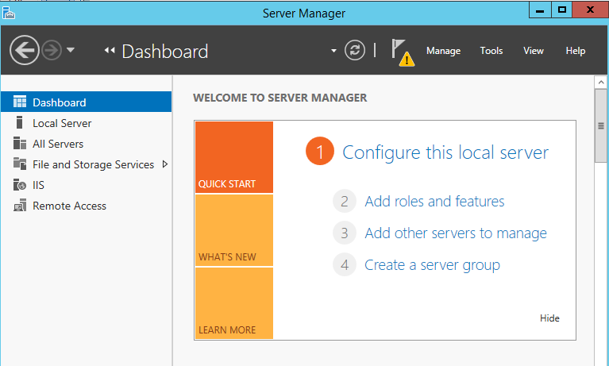
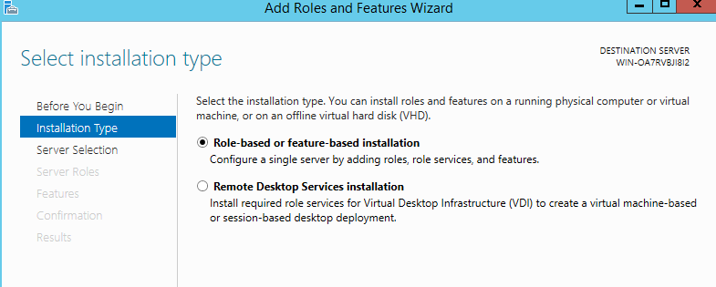
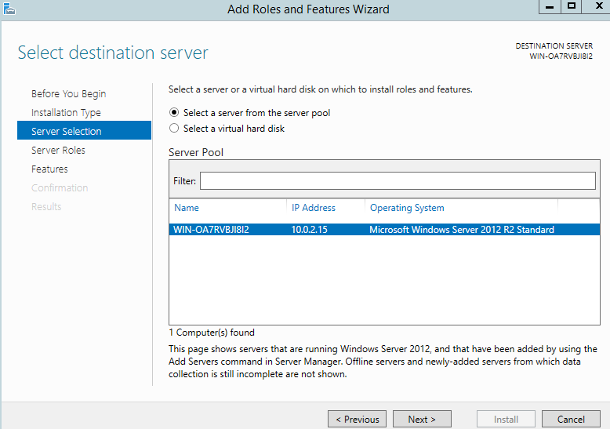
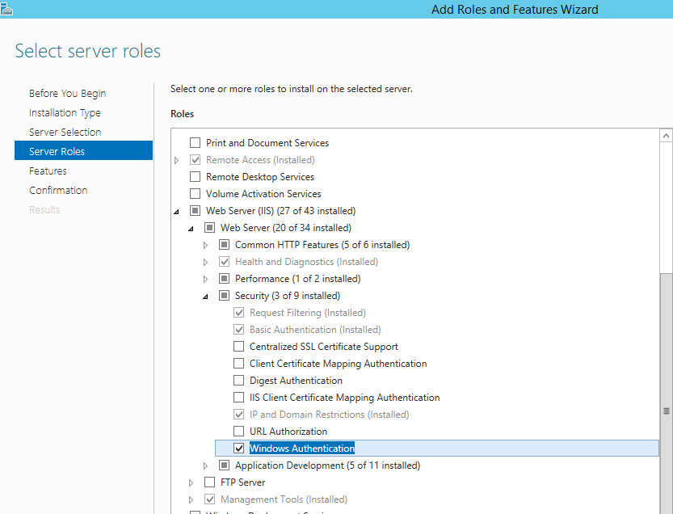

Para utilizar la autenticación de ActiveDirectory provista por BIZUIT Dashboard es necesario configurar adecuadamente Internet Information Server.
A continuación se presentan los pasos a seguir para realizar dicha configuración en el sistema operativo Windows 10
- Asegúrese que la opción Autenticación de Windows se encuentre instalada. Para ello, desde "Programas y Características" seleccione la opción "Activar o desactivar Características de Windows"

- En la entrada "Internet Information Services" despliegue la opción "Servicios World Wide Web" y luego despliegue la opción "Seguridad". Una vez allí verifique que la opción "Autenticación de Windows" se encuentre activada.

A continuación se presentan los pasos a seguir para realizar dicha configuración en el sistema operativo Windows Server 2012 o superior:
- Asegúrese que la opción Autenticación de Windows se encuentre instalada. Para ello, desde "Panel de Control-Programas" seleccione la opción "Activar o desactivar Características de Windows"

- Se desplegará la ventana Server Manager. En la opción Dashboard seleccione "Agregar Roles y Características"

- En la opción Installation Type seleccione "Role-based or feature-based installation"

- Seleccione el nombre del server Windows.

- En la entrada "Web Server (IIS)" despliegue la opción "Web Server" y luego despliegue la opción "Security". Una vez allí verifique que la opción "Windows Authentication" se encuentre activada.

Nota: En caso de no encontrar la opción "Autenticación de Windows" dentro de la opción "Seguridad" se debe a que dicha funcionalidad no se encuentra soportada en la edición del sistema operativo que estuviere utilizando.
Anterior / Siguiente